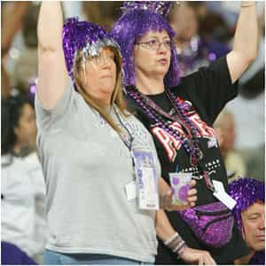

< < < Back
Women Don’t Know How To Argue With Logic Or Facts – Return Of Kings
I do not want to offend you gentlemen. I know some of this is basic knowledge. But I could not help pointing out how stupid some people are, and how unbelievably easy it is to pick apart their arguments. Another day I’ll use my legal skills to show how to really destroy someone in argument, but for now let’s focus on some fun feminist yappings.
Originally I was going to write something about the WNBA and why it even exists. I was watching Monday Night Football and happen to switch to ESPN2 where there was a playoff game between the LA somethings versus the Phoenix something elses. Despite it being a playoff game, the arena was almost empty. Of the fans that actually went to the game — for reasons I will never understand — they are…ahem…a certain type. Almost all the women in the crowd are either fat or have boy haircuts. The few men that are there look like beta husbands of the aforementioned fat/masculine women. One of the refs looks like the marshmellow man from Ghostbusters.

What’s The Point?
So I started doing some research into the history of the WNBA, its financials, and essentially try to find a reason why it exists. But I quickly found this guy did a pretty good job in his article last year:
Despite the challenges, however, the WNBA keeps chugging along resiliently. While it does not make much money, attract many fans or make a lot of headlines, was being popular ever its purpose? Perhaps the league was created not to make a profit but to make a statement.
Just as women are making advances in politics and education, they are also trying to break the status quo in an industry dominated by testosterone.
…
They are here simply to challenge the boys.
That challenge is ultimately a weak one. Ideology and identity statements make for a nice, fluffy story. But it has created a sport founded upon sand. When you get down to the basics, sports are about entertainment, and women’s basketball will always be less spectacular and less appreciated than any show men put on.
If you want real gender equality, then, you’ll have to look somewhere else besides basketball.
The Feminist Response
There were only a handful of comments, but of course the feminist voice was present. And that led me to instead focus my post this week on how amazingly inept these feminists and their supporters are in making arguments, and how easy they are to pick apart. The argument is not based on logic. It is not based on fact. It is not even based on the actual content of what they are criticizing. While an occasional point may be made, it is overwhelmed by the abundance of idiocy.
As I mentioned above since my vocational livelihood is based upon deconstructing arguments, I thought it would be fun to apply it in this realm. Here are some of the comments and why they fail to carry any weight:
Misquoting the source:
This happens a lot more than you would believe. Take a look at Lady Disbelief:
Unbelievable how you continue to look down upon women in sports. Yeah, I know all about how just a couple of years ago, you slammed women’s sports on the radio. Don’t you remember the Olympics this summer? The American women have dominated that event and have done a lot more than the men have. More people are tuning into women’s basketball now than they ever have. The fact that you see women’s sports as here “simply to challenge the boys” is borderline misogynistic.
Her argument is based on the “fact” that the writer looks down upon “women in sports.” If she had bothered to read the actual article and not get offended and jump to conclusions at the mere mention of male/female inequality, she would have seen that the writer explicitly stated he does not look down upon women in sports in general, just the WNBA:
I support women’s athletics. Some of my fondest sports memories are of watching Abby Wambach — the pride of my hometown of Rochester, N.Y. — strike headers into the back of the net while leading the U.S. women’s soccer team in thrilling runs at both the World Cup and the Olympics. I took a great deal of pride in watching our female Olympians compete this summer.
So this is not a criticism of women’s sports. This is a criticism of women’s professional basketball.
It really cannot get any clearer than this. Watch out for those sneaky bitches that try to pull a fast one like this.
The “no evidence” argument:
From the mouth of “Really” we get a comment with no substantiation whatsoever…
This whole piece stinks of sexism and victim-blaming. Also, if you have to clarify that you’re not a misogynist, you probably are. Disappointed the The Hoya continues to give a voice to sexism.
Thank you for that insightful comment. First, a blanket opinion with no explanation on how this conclusion was reached. Next, another argument where she admits it is founded upon an assumption. A remark like this is easy to pick apart, because it is not based on anything whatsoever.
The contradictor:
Anonymous chick writes…
The first game of the 2012 WNBA Finals sold out. The arena was packed.
“But the WNBA is neither exciting nor historical.”
Wrong. The first women’s basketball game took place in the late 1800s. The league is young but women’s basketball has a long history. When the NBA was 16 years old, would you have considered it “historical?”
As one of the other commenters point out, the first game was not sold out. And to add to her inaccuracies, her next set of sentences is self-contradictory. She states that the writer is wrong for saying the WNBA is not historical, as the first female basketball game took place in the 1800s. Even if it did (who knows/cares), that is not the WNBA. As she states herself, the league (referring to the WNBA) is young. Thus the writer’s comment of the WNBA not being “historical” is accurate, and confirmed as such by this commenter herself.
The implied rhetorical question:
Hungry chomps at the bit, stating…
Is it because women’s basketball is less entertaining or because the sports media is dominated by men who have the same opinion as you and choose not to give women’s basketball the same attention?
Nice try with that supposed rhetorical question. However, the answer is actually the opposite of what you tried to imply. It’s because it’s less entertaining. Ever wonder why people watch horse racing yet there is no market for tortoise racing?
Apples to Oranges:
Tragic, an appropriate name for this comment, opines…
Georgetown women’s basketball has consistently outperformed the men’s team for the past several years yet continue to play in front of meager audiences in McDonough while the losing men enjoy a spectacle in the Verizon Center. Why? Because the women are dismissed from the get-go.
First off, again it’s because nobody wants to watch this sport outside those delusioned into thinking the ideal of gender equality should force people to sacrifice entertainment. Blake Griffin was entertaining to watch even before the Clippers were decent. Can’t say the same for any WNBA player. More importantly, Tragic’s claim that the men’s team is “outperformed” by the women’s team is flawed as you are comparing two different leagues. Can you say that Arena League Football team (insert any team) “outperformed” even the worst NFL team? Pit them against each other and see who wins. I’m guessing Georgetown’s men’s team just may be slightly favored against the school’s women’s team.
Conclusion:
Next time you get hit with a comment by one of these superficially intelligent people, take a step back and analyze. Within a few seconds you should be able to deconstruct the argument with ease.
Read Next: 3 Quick Tips To Protect Yourself Legally